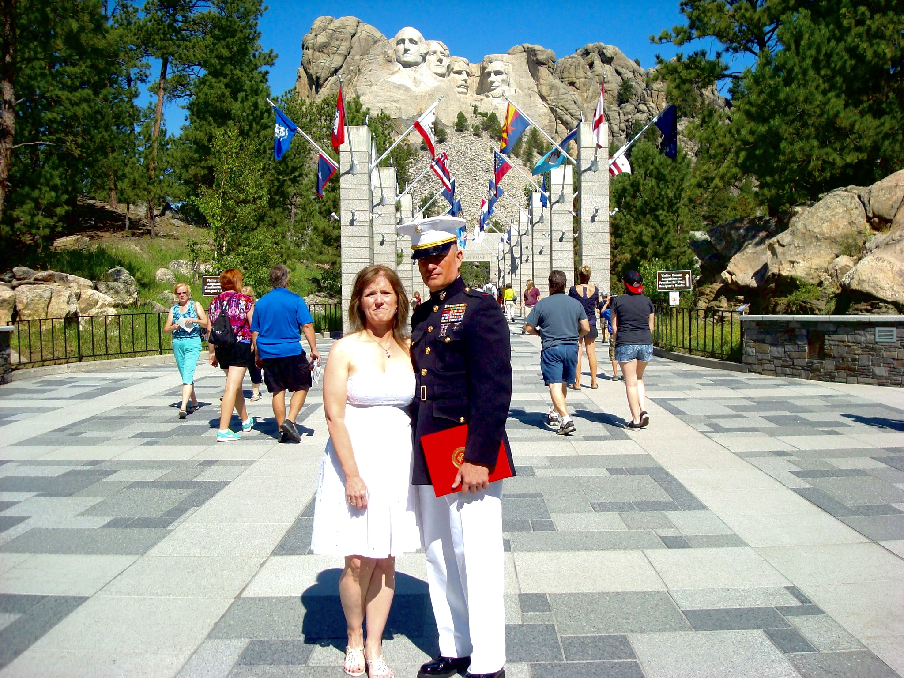

Alan & Mary @ Mount Rushmore in 2014
Results-driven professional with experience in managing business processes such as strategic and tactical business planning, budgeting, marketing, human resources, team management, and business operations. Successfully operated a Combat Camera Unit with up to 76 Marines and 13 Japanese Civilians with a operating budget over $600,000 and over 10 million in facilities and equipment. Researched, tested and evaluated new equipment to enhance capability as well as reduce cost and manpower. Developed and executed fielding plans for $17.5 million in new systems to include a lifecycle replacement strategy. Researched replacement printing technology at a 50% cost savings of current equipment which will produce higher quality product, reduce turnaround time and save manpower on maintenance issues. Served as the subject matter expert to the Marine Forces Reserve Commander for all matters regarding; imagery, acquisition, dissemination, field printing, commercial printing equipment and fleet copier procurement. Managed a major command level training department in support of over 35,000 Marines and Sailors aboard the installation.
You are welcome to download my resume from the list below
{kind=link}